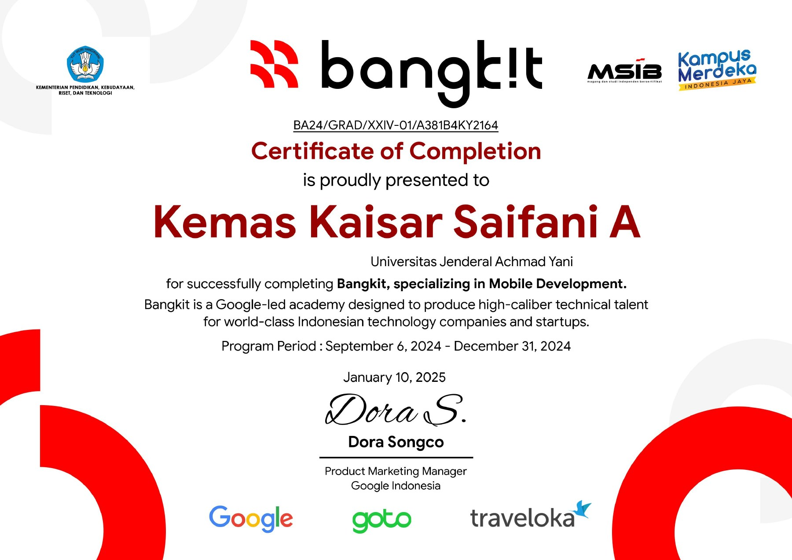

-

Lulus penuh
Bangkit Academy 2024: Mobile Development
Google, GoTo, dan Traveloka · Program 6 September – 31 Desember 2024
Program akademi yang dipimpin Google lewat Kampus Merdeka (MSIB), dengan jalur Mobile Development. Saya dinyatakan lulus penuh (Full Graduate) dan menyelesaikan capstone project.
-
Belajar Pengembangan Aplikasi Android Intermediate
Dicoding Indonesia · 28 Desember 2024 · 150 jam
UI lanjutan, animasi, lokalisasi, media, Google Maps, testing, dan Firebase.
-
Belajar Penerapan Machine Learning untuk Android
Dicoding Indonesia · 9 November 2024 · 60 jam
ML Kit, TensorFlow Lite, MediaPipe, dan Firebase ML di aplikasi Android.
-
Belajar Fundamental Aplikasi Android
Dicoding Indonesia · 1 November 2024 · 140 jam
Networking, Room, ViewModel, navigasi, testing, dan WorkManager.
-
Belajar Dasar AI
Dicoding Indonesia · 27 Oktober 2024 · 10 jam
Konsep dasar AI, data, machine learning, dan deep learning.
-
Belajar Membuat Aplikasi Android untuk Pemula
Dicoding Indonesia · 4 Oktober 2024 · 60 jam
Activity, Intent, layout, tema, dan RecyclerView.
-
Belajar Dasar Git dengan GitHub
Dicoding Indonesia · 4 Oktober 2024 · 15 jam
Repository, branching, kolaborasi tim, dan pull request.
-
Memulai Pemrograman dengan Kotlin
Dicoding Indonesia · 22 September 2024 · 50 jam
Dasar Kotlin, OOP, functional programming, generics, dan coroutines.
-
Pengenalan ke Logika Pemrograman (Programming Logic 101)
Dicoding Indonesia · 12 September 2024 · 6 jam
Gerbang logika, algoritma, dan computational thinking.
-
Memulai Dasar Pemrograman untuk Menjadi Pengembang Software
Dicoding Indonesia · 11 September 2024 · 9 jam
HTML, CSS, dan JavaScript dasar, serta dokumentasi kode.